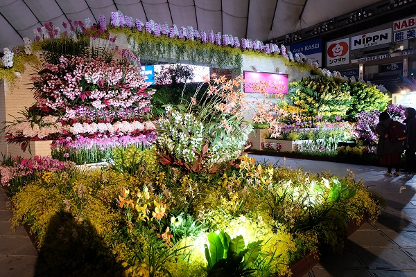
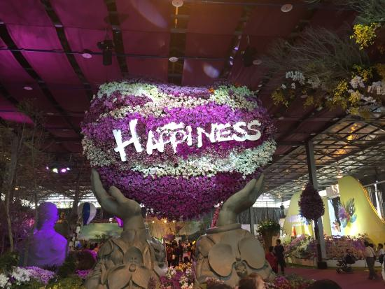

The Tokyo International Quilt Festival at Tokyo Dome provides everything you want to know about quilts. They have a different exhibition theme each year, and the latest works by popular quilt artists and antique quilts are exhibited. Winners of the Japan Quilt Grand Prix are also announced. Other highlights include talk shows on stage, quilt lessons, quilt workshops, and booths selling quilting supplies. A must-see event for quilt lovers.
The International Orchid Festival brings diverse orchids from all over the world under one roof. About 100,000 plants of 3,000 varieties of Western, Oriental, and Japanese orchids are displayed. The Japan Grand Prix has six judging categories such as Individual, Fragrance, and Arts for selecting winners. Besides the orchid displays, there are booths selling orchids, flower artist demonstrations, orchid craft-making workshops, and stage entertainment.
A major travel event in which travel information on locations throughout Japan and all over the world is concentrated. The event introduces visitors to the latest local travel information and recommendations through booths run by tourism associations from municipalities throughout Japan in the domestic area and those run by the tourism boards, hotels, and airline companies of various countries in the overseas area.
With various amenities such as a food court where one can enjoy dishes from around the world and a stage where local songs and dances are performed, one can get the sense of having travelled around the world just being at the venue and immersing oneself in the plentiful forms of entertainment.
The Tableware Festival offers all kinds of information about tableware. Japanese and foreign tableware brands arrange their tableware exhibits to suit the year's exhibition theme.
You can also see dining space arrangements by celebrities and cultural figures. The latest foreign-brand tableware and Japanese pottery are for sale. Seminars on table setting and flower coordination are also held.
A biennial exhibition for automobiles and motorcycles, the Tokyo Motor Show is more than just a car show. It's a chance for big name brands to bust out their new concept pieces, show off innovative futuristic technology, and debut their most revolutionary ideas.
Most of the cars on display aren't commercial models, but rather, trailblazing mock-ups and prototypes that give a clue as to where the auto world is heading, and what progress we might see down the line. Cutting edge and cool, it's one of the world's biggest shows of this nature.